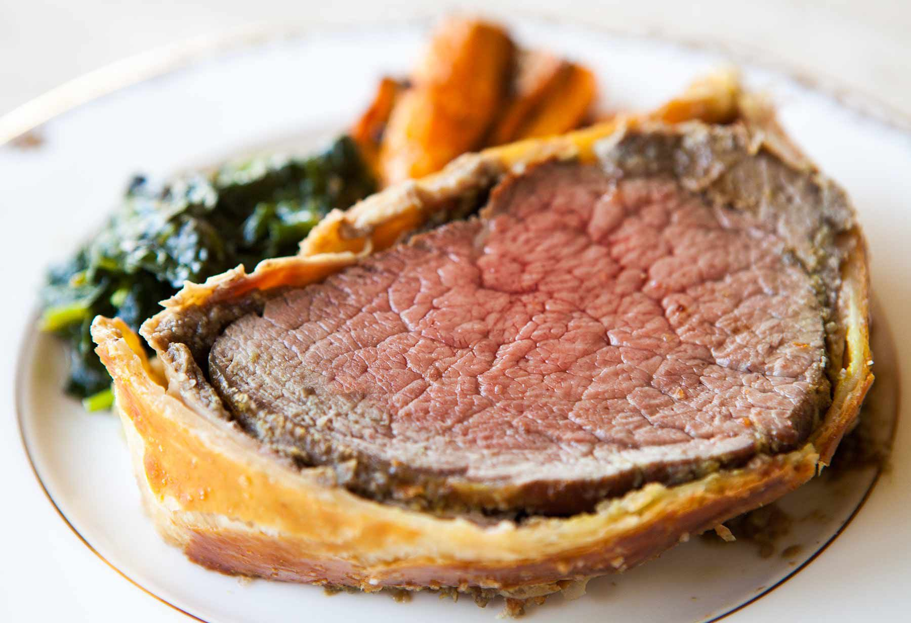
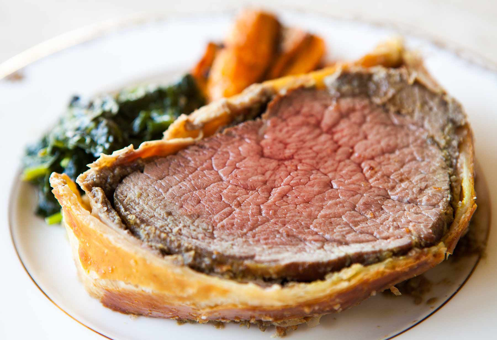
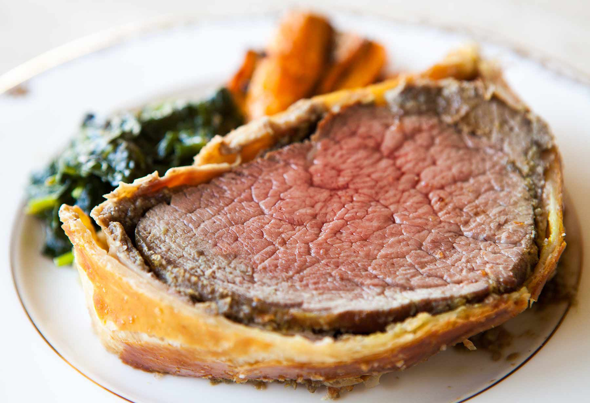
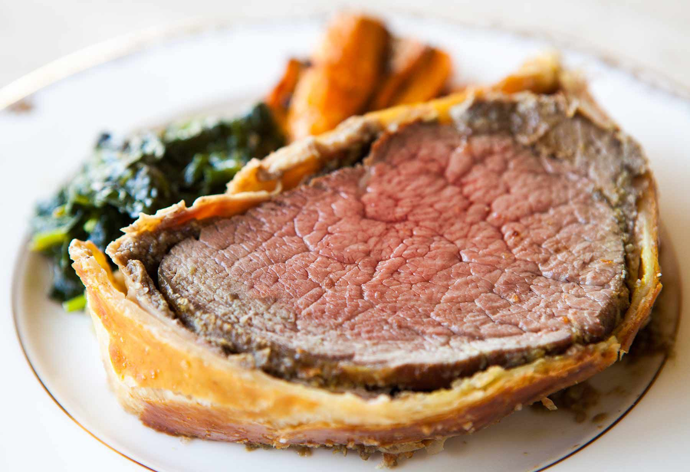

by Orate, Angelo Regis C.
This beef Wellington is served every Christmas at McMurdo Station, Antarctica's largest community. It is usually accompanied by lobster tail and at least two different kinds of mashed potato. Recipe courtesy South Pole Chef James Brown and Former South Pole Chef "Cookie" Jon Emanuel.”
If I could give this 10 stars I would, this was amazing. Used a Veal roast because I couldn't find the correct cut of meat at the shops ad this was cheaper, surprisingly. Everything else, followed recipe as written. Will definitely make this for guests another time, wonderful. Made for My Food Odyssey and paired up with your Parsnip Mashed Potatoes.